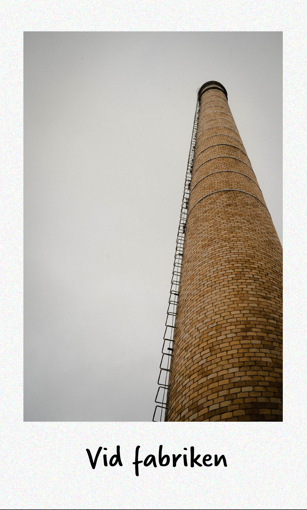
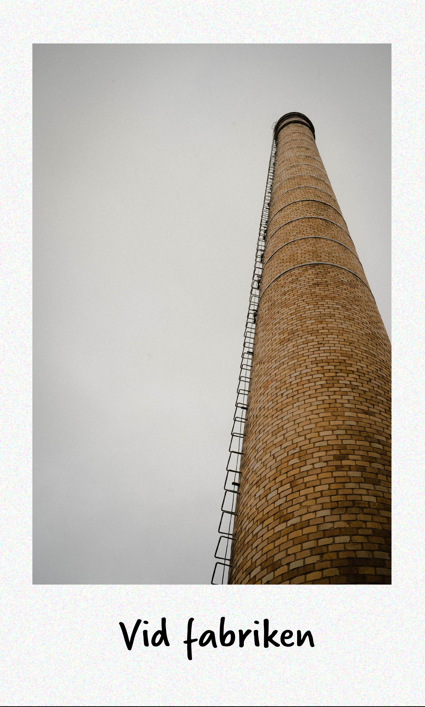
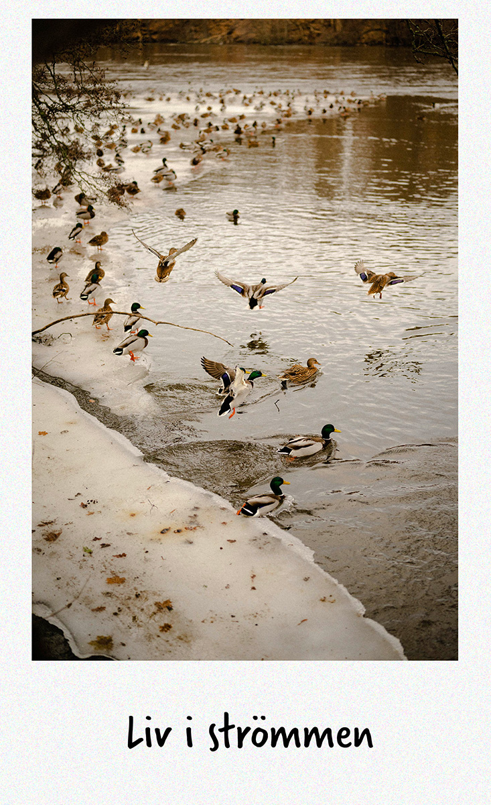
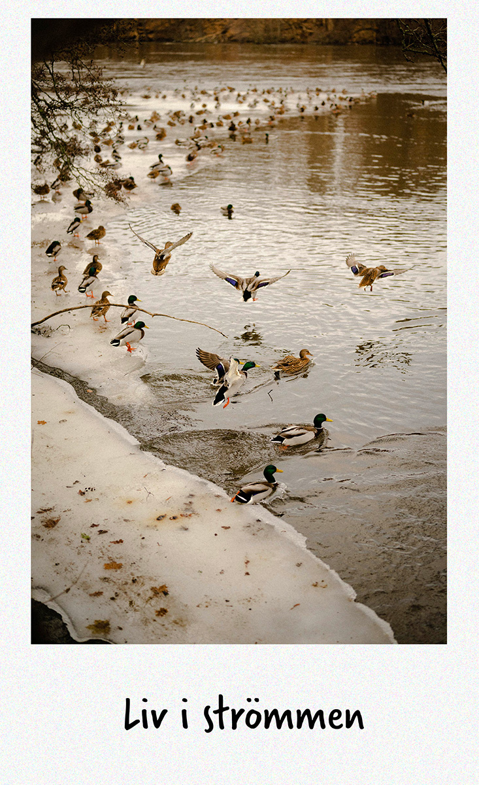
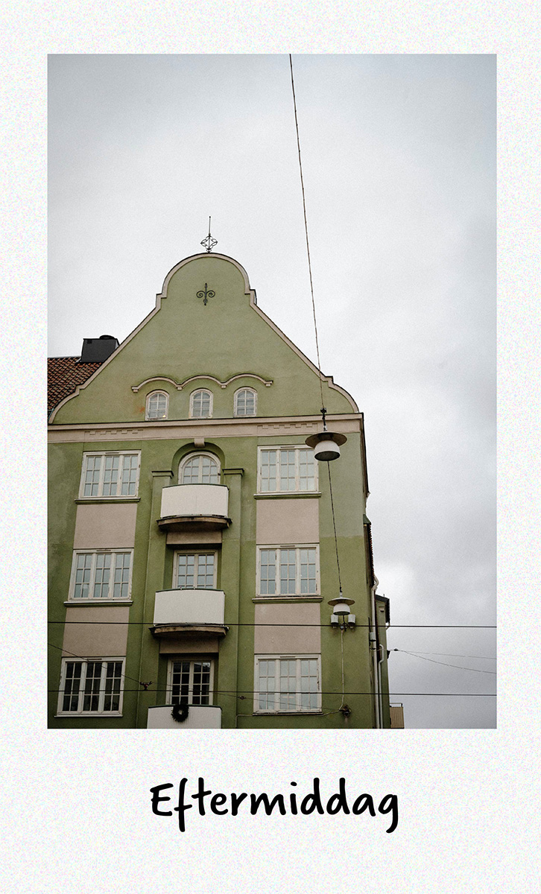
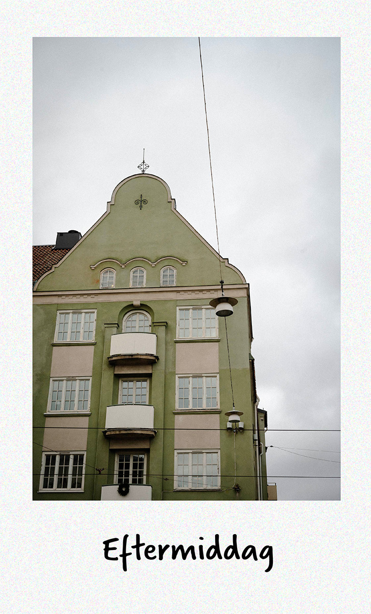
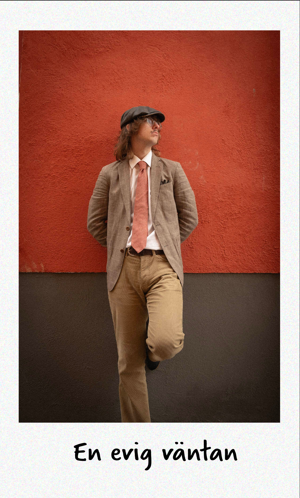
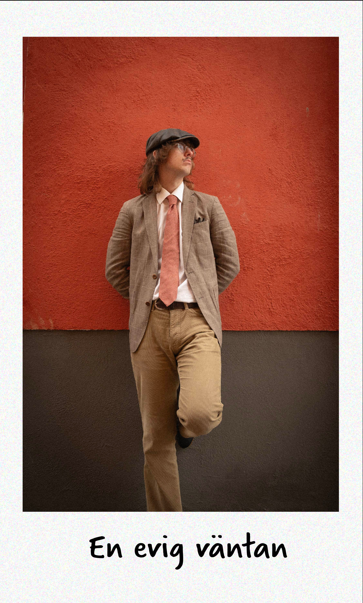

Bildgalleri
Välkommen till vårt galleri som tar dig med på en resa genom "Tegelstaden". Bilderna speglar hur Norrköping kunde ha sett ut under det glada 60-talet, en tid då arkitektur och samhällsdesign tog stora kliv framåt för att forma städer på ett unikt sätt.
 


 

 

 
